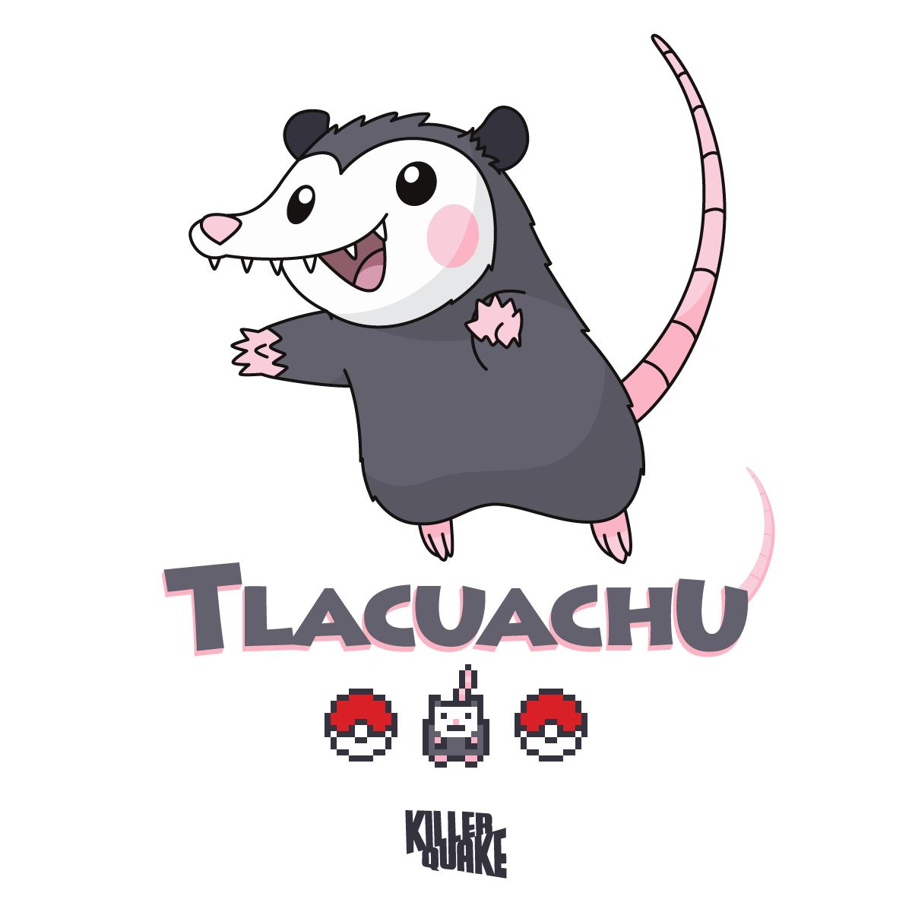
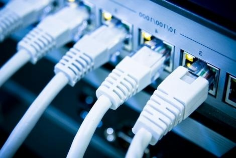
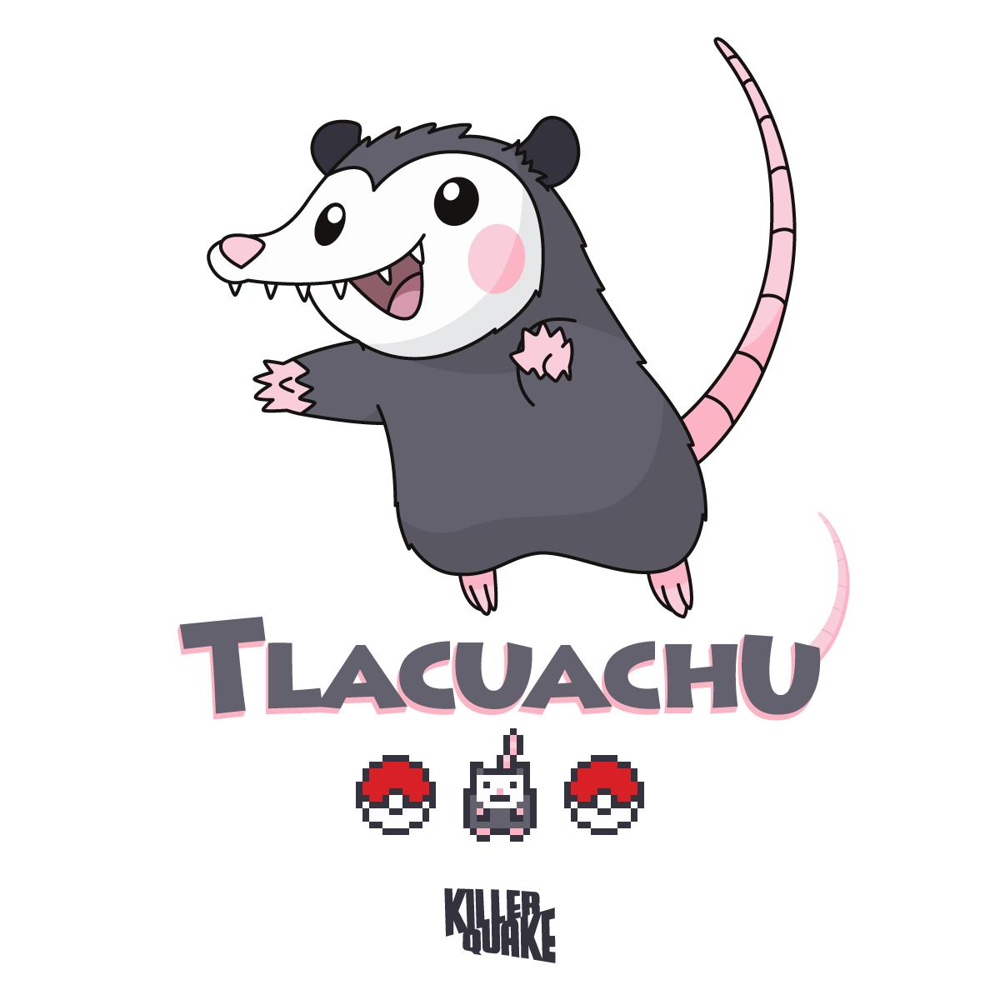
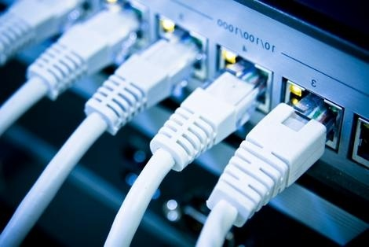

Acerca de Nosotros
PAGINA WEB DONDE ESTAN NUESTROS FOLDERS DE TRABAJOS
Sobre nosotros Somos estudiantes de nivel superior en el Instituto tecnologico de Cuautla Moreles en el Tecnologico Nacional De Mexico En la Carrera de Ingenieria En Sistemas Computacionales Con el Docente: Urzua Sanchez Guillermo.
¿Qué es el enrutamiento?
¿Qué es el enrutamiento? El enrutamiento es el proceso de selección de rutas en cualquier red. Una red de computación está formada por muchas máquinas, llamadas nodos, y rutas o enlaces que conectan dichos nodos. La comunicación entre dos nodos en una red interconectada se puede producir a través de muchas rutas diferentes. El enrutamiento es el proceso de seleccionar la mejor ruta mediante algunas reglas predeterminadas.
¿Por qué es importante el enrutamiento?
El enrutamiento genera eficiencia en la comunicación de la red. Los errores en la comunicación de la red provocan largos tiempos de espera para que las páginas del sitio web carguen para los usuarios. También puede provocar que los servidores de sitios web se bloqueen porque no pueden gestionar una gran cantidad de usuarios. El enrutamiento ayuda a minimizar las fallas de la red al administrar el tráfico de datos para que una red pueda usar la mayor cantidad posible de su capacidad sin crear congestión.¿Qué es un enrutador?
Un enrutador es un dispositivo de red que conecta los dispositivos de computación y las redes a otras redes. Los enrutadores cumplen principalmente tres funciones principales.Determinación de la ruta
Un enrutador determina la ruta que toman los datos cuando se mueven de un origen a un destino. Intenta encontrar la mejor ruta al analizar las métricas de la red, como el retraso, la capacidad y la velocidad.Reenvío de datos
Un enrutador reenvía los datos al siguiente dispositivo en la ruta seleccionada para llegar finalmente a su destino. El dispositivo y el enrutador pueden estar en la misma red o en redes diferentes.Balanceador de carga
A veces, el enrutador puede enviar copias del mismo paquete de datos a través de varias rutas diferentes. Lo hace para reducir los errores debidos a las pérdidas de datos, crear redundancia y gestionar el volumen de tráfico.¿Cómo funciona el enrutamiento?
Los datos se mueven a lo largo de cualquier red en forma de paquetes de datos. Cada paquete de datos tiene un encabezado que contiene información sobre el destino previsto del paquete. Cuando un paquete viaja a su destino, varios enrutadores pueden dirigirlo varias veces. Los enrutadores realizan este proceso millones de veces por segundo con millones de paquetes. Cuando llega un paquete de datos, el enrutador primero busca su dirección en una tabla de enrutamiento. Esto es similar a cuando un pasajero consulta el horario de un autobús para encontrar la mejor ruta de autobús a su destino. Luego, el enrutador reenvía o mueve el paquete hacia el siguiente punto de la red. Por ejemplo, cuando visita un sitio web desde una computadora de la red de la oficina, los paquetes de datos van primero al enrutador de la red de la oficina. El enrutador busca el paquete de encabezado y determina el destino del paquete. A continuación, busca en su tabla interna y reenvía el paquete, ya sea al siguiente enrutador o a otro dispositivo, como una impresora, dentro de la propia red. 


